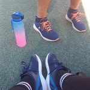

Классический и спортивный массаж · МФР · фитнес-нутрициология · биомеханика. Путь Зелениных — восстановление организма сочетанием профессионального массажа, физической активности, правильного питания и индивидуального подхода.
Расслабление, снятие напряжения, восстановление тонуса и кровообращения.
Подготовка и восстановление после нагрузок, работа с перегруженными группами мышц.
Миофасциальный релиз — техники работы с фасциями, гибкость и подвижность суставов.
Биомеханика и питание как основа здоровья и долгосрочной реабилитации.
Напиши нам — подберём программу под твои задачи и нагрузку.
Записаться через WhatsApp